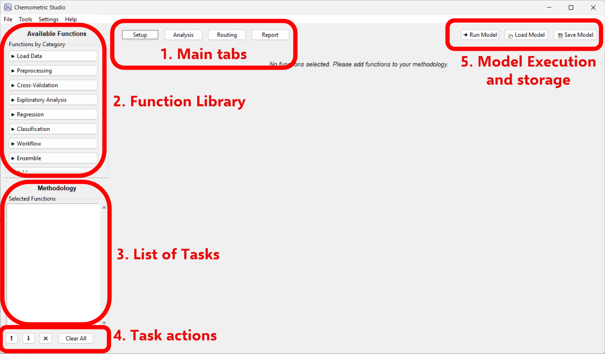
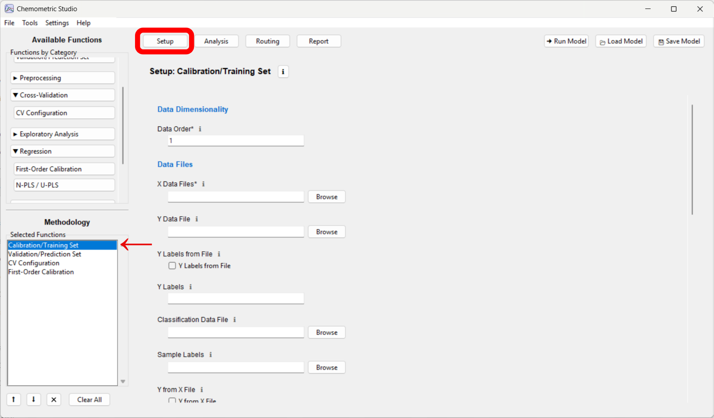

Setup Tab
The Setup tab is where you build the methodology pipeline by selecting and configuring functions.
Basic Workflow
- Add Functions: Click category names in the left panel to expand available functions.
- Add to Methodology: Click on a function to add an instance to your Methodology list.
- Configure: Select each instance and fill in required parameters in the configuration panel.
- Optional Passforward: For passforward-compatible functions, use the (PF) switch in Setup to expose mapped downstream outputs.
- Review Execution Order: Functions execute top-to-bottom in the Methodology list.
- Save: Use File -> Save Model to persist your pipeline as
model.json.
Setup Overview Image
Use this annotated image to identify the main controls before building your first workflow.

Function Configuration Image
After adding tasks, select each methodology item and configure all required parameters.

Typical Function Order
- Load Data (or Validation Data)
- Preprocessing (Baseline, Smoothing, Center and Scale)
- Modeling (PLS, PCA, PARAFAC)
Most routes are created automatically. Use Routing Tab only for advanced overrides.